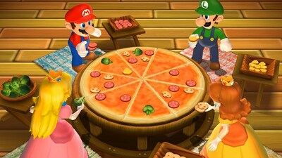

Depois de um longo dia a tentar salvar a princesa Peach das garras do malvado Bowser, o Super Mario está cheio de fome. Por isso mesmo, decidiu encomendar pizza no restaurante do amigo Yoshi.O restaurante tem na sua ementa P pizzas. Os ingredientes das pizzas são identificados por inteiros positivos, sendo que a i-ésima pizza da ementa contém Ki ingredientes, com identificadores bi,1, bi,2, ..., bi,Ki.
O Mario é muito picuinhas com as suas pizzas e ele não gosta nada de N ingredientes, com identificadores a1, a2, ..., aN, e por isso ele quer encomendar uma pizza que não contenha nenhum desses ingredientes. Tens de ajudar o Mario a perceber qual o número de pizzas da ementa que o Mario pode encomendar, ou seja, que não contêm nenhum dos ingredientes que o Mario não gosta.
A primeira linha de input um inteiro N (1 ≤ N ≤ 100), o número de ingredientes, seguida de N inteiros distintos ai (1 ≤ ai ≤ 100), os identificadores dos ingredientes que o Mario não gosta.
A segunda linha contém um inteiro P, o número de pizzas. Seguem-se P linhas, cada uma descrevendo uma pizza da ementa. A i-ésima linha começa com um inteiro Ki (1 ≤ Ki ≤ 100), o número de ingredientes dessa pizza, seguido de Ki inteiros distintos bi,j (1 ≤ bi,j ≤ 100), os identificadores dos ingredientes da i-ésima pizza.
É garantido que não existem duas pizzas completamente iguais.
Uma linha com um inteiro indicando o número de diferentes pizzas que o Mario pode encomendar.
| Input | Output |
|---|---|
1 2 3 1 1 1 2 1 3 |
2 |
Explicação do exemplo 1: O Mario pode encomendar a 1ª e a 3ª pizzas (não tem contêm o ingrediente 2), mas não pode encomendar a 2ª pizza.
| Input | Output |
|---|---|
2 1 2 5 3 3 5 7 2 4 1 3 1 3 2 2 3 4 1 9 |
3 |
Explicação do exemplo 2: O Mario pode encomendar a 1ª, 3ª e 4ª pizzas (não contêm os ingredientes 1 ou 2).
Conteúdo de Fernando Silva (DCC/FCUP), migrado de dcc.fc.up.pt/~fds/aulas/EDados/2526/praticas/problems/prob243.html.